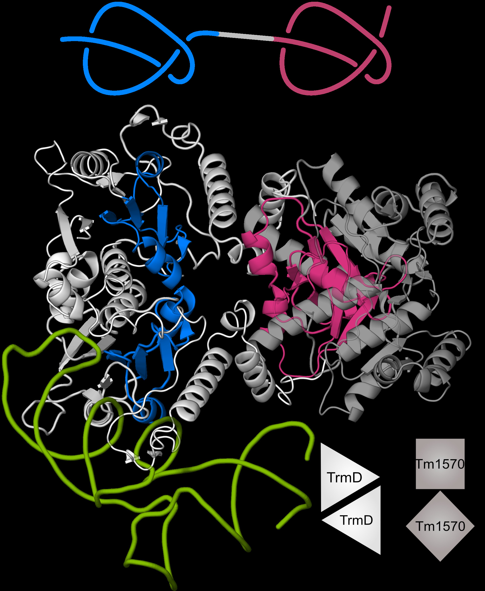

Title:
How entangled proteins can be? Prediction and in vitro verification.
Abstract:
The presence of knots in protein 3D structures is well
established [1]. However, as they are not common
[2], only a fraction of such proteins is available in the
PDB database. It was not possible to assess their im
portance and versatility up until now because we did
not have access to the whole proteome of an organ
ism. The development of ecient machine learning
methods for protein structure prediction, such as Al
phaFold and RoseTTaFold, changed that [3].
First, we analyzed all proteins from human proteome
(over 20 000) in search for knots and found them in
less than 2% of the structures. Using a variety of
methods, including homolog search, clustering, quality assessment and visual inspection, we determined
the nature of each of the knotted structures and clas
sifed it as either knotted, potentially knotted or an
artifact and de-posited in a database available at:
https://knotprot.cent.uw.edu.pl/alphafold. It turns
out that over 75% of knots in human proteins may be
artifacts. However, among potential knots we found
knot 63 which would be the first knot in proteins with
unknotting number higher than one [4].
Second, we focused on proteins which can be even
more complex and possess two knots on a single chain
(up to now, only single knots were found). For the
first time, we searched dierent databases for double
knotted proteins. Using AlphaFold we predicted a few
families of doubly knotted proteins and studied in de
tail their structure and function. Using experimental
approach, we showed that such proteins can fold and
perform their intended function 3, Fig. 1.

FIG. 1. Predicted structure of CnTrmD-Tm1570 fusion protein based on AlphaFold and docking.
This homodimeric (second chain is transparent) complex binds tRNA (green) with its TrmD domains. Finally, we established AlphaKnot [5], the first server to assess entanglement of AlphaFold-solved protein models with regard to thier pLDDT data. The server has two main functionalities. One is a database of structures from all of 21 full proteomes solved by Al phaFold which have been published up to 2022. Second is a user-friendly web server for researchers to analyze their own AlphaFold predictions. By using pLDDT confidence score, we classified predictions into categories which allow for detailed analysis, whether the protein model is correctly solved. This allowed us to discover new types of knot in the human proteome [5]. By cross-validating AlphaFold predictions with our server and RoseTTa predictions, we showed that AlphaFold, while overall a great tool, can have prob lems with correctly modeling knot topology of pro teins. We show examples of AlphaFold models with wrongly predicted topology as well as give possible explanations of such occurrences. This work was supported by the National Science Centre #UMO-2018/31/B/NZ1/04016 (to JIS) and COST EUTOPIA action. [1] J.I. Sulkowska, On folding of entangled proteins: knots, lassos, links and theta-curves, Current Opinion in Structural Biology 60:131-141 (2020)
[2] M. Jamroz et al., KnotProt: a database of proteins with knots and slipknots, Nucleic Acids Res., 43: D306-D314 (2014).
[3] J. Jumper et al., Highly accurate protein structure prediction with AlphaFold. Nature, 596.7873: 583-589 (2021).
[4] A. Perlinska et al., New 63 knot and other knots in human proteome from AlphaFold predictions [https://doi.org/10.1101/2021.12.30.474018]
[5] W. Niemyska, et al., AlphaKnot: Server to analyze entanglement in structures predicted by AlphaFold methods, Nucleic Acids Research [doi:10.1093/nar/gkn000].